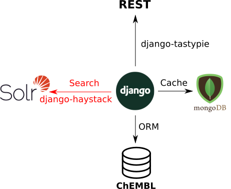
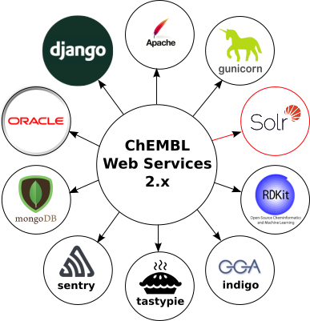
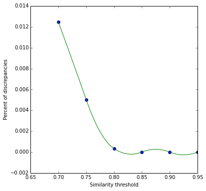

Searching in
ChEMBL
Michał Nowotka
ChEMBL Group
EMBL-EBI
What's ChEMBL?
Our team develops and manages ChEMBL, a database of quantitative small molecule bioactivity data focused in the area of drug discovery.
The majority of the ChEMBL data is derived by manual abstraction and curation from the primary scientific literature.
ChEMBL Database
- Current version: 20 (21 coming #soon)
- 62 Tables
- Distinct compounds: 1,463,270
- Targets: 10,774
- Activities: 13,520,737
- Publications: 59,610
ChEMBL Django ORM Model
- No more raw SQL in Python code
- DB agnostic interface
- Less sensitive to schema changes
- myChEMBL
ChEMBL Web Services
Utilities and data

Filtering
Select all approved drugs:
molecule?max_phase=4
Select all approved drugs with two or more aromatic rings:
molecule?max_phase=4&molecule_properties__aromatic_rings__gte=2
Select all targets with name starting from 'serotonin':
target?pref_name__istartswith=serotonin
Ordering
Order molecules by weight, ascending:
molecule?order_by=molecule_properties__full_mwt
Order molecules by weight, descending:
molecule?molecule_properties__isnull=false&order_by=-molecule_properties__full_mwt
Order by aromatic rings ascending and then by weight descending:
molecule?order_by=molecule_properties__aromatic_rings&order_by=-molecule_properties__full_mwt
Want viagra?
- Search compounds by pref_name and synonyms
- Search targets by pref_name and synonyms
- Search in assay descriptions
- Search in document abstracts
Why do we need this?
Implmenting search
- SQL would be too slow to execute
- Speed depends on DB engine
- Filtering simultaneously on many columns
results in a long filter
Software stack

Django-haystack
- Like ORM but for search
- Provides uniform API
- Model-oriented
- Many search backends supported:
- Solr
- Elastic
- Whoosh
- Xapian
Technologies used

Why sorl?
- Mature and trusted
- Already used at EBI
- Apache license
- BioSolr, compound similarity
What about Elastic?
- Plans to use Kibi
- Put Kibi on myChEMBL first
- Make it public and evaluate
- Kibi + sureChEMBL?
MongoDB
- Used as a cache backend
- Experiments with similarity search
- LSH
- Good performance, good results
Cache characteristics
- Once cached, request won't change until next ChEMBL release
- Cache should be shared across many production machines
- Available from python, supported by EBI
- Failproof, timeout
LSH-based similarity search

LSH-based similarity search

myChEMBL
- special NoSQL issue
- Kibi
- Mining relations using Neo4j
- LSH-search on MongoDB
- Ipython Notebooks
GraphQL
- New way of structuring client applications
- User decides what API returns
- Fits perfectly into Django stack
- Very new idea (to us)
Thank you!
Questions?